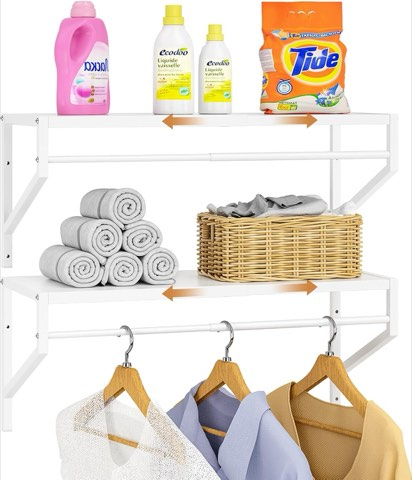

Nobody dreams about their laundry room.
But a laundry room that works quietly fixes a surprising amount of weekly stress.
A bad layout turns a five-minute task into a twenty-minute mess.
A good one disappears into the background, the way it should.


ThreeHio Expandable Over-Washer and Dryer Laundry Room Shelves with Hanging Rod, 2 Pack
Shop on Amazon1. Add Personality Without Creating Clutter
A laundry room doesn't need to feel sterile to stay functional.
A framed print adds character without taking up counter space.
A small plant does the same.
A patterned backsplash brings in personality through the wall instead of the surfaces.
Minimal but intentional beats anything that tips into visual clutter.
2. Choose Flooring That Can Handle Real Life
Water, heat and the occasional spill are a given in this room.
Vinyl plank holds up well and stays budget-friendly.
Tile resists moisture better than almost anything else.
Sealed concrete suits a more modern look.
Carpet is the one material worth ruling out entirely here.
3. Add a Pegboard for Storage That Can Change
Pegboards aren't just a trend, they solve a real flexibility problem.
Tools rearrange easily as needs shift, no new holes required.
Brushes, measuring cups and small baskets all hang well on one.
A system that can grow and shift with actual use beats one that's fixed from day one.
4. Label to Eliminate the Guesswork
Labeling sounds like overkill until it starts saving real time.
Detergent containers, storage bins and baskets all benefit.
No more opening every cabinet to find one thing.
Small efficiencies like this stack up faster than expected.
5. Hide Cleaning Supplies Behind Closed Doors
Visual noise adds stress to a room that already feels busy.
Cleaning sprays, extra paper towels and random tools all work better out of sight.
Clear surfaces have a real, if subtle, calming effect.
That shift alone makes the room feel less chaotic day to day.
6. Add a Utility Sink If the Space Allows
A utility sink feels old-fashioned until the first time it's genuinely needed.
Hand-washing delicates gets easier.
Paint brushes stop ending up in the kitchen sink.
A wall-mounted version delivers the same function without crowding a smaller room.
7. Install Pull-Out Storage for Tight Spots
Pull-outs sound like a luxury upgrade. They solve a real space problem.
Between the washer and the wall is prime pull-out territory.
Under the countertop works just as well.
Inside a tall cabinet turns dead vertical space into something usable.
Supplies stay accessible without adding visual clutter.
8. Choose Baskets That Actually Serve a Purpose
A basket that looks pretty but doesn't match the routine isn't pulling its weight.
Labeled baskets for lights, darks and towels turn sorting into a non-event.
Wire baskets hold up longest.
Canvas folds away when not needed.
Plastic tends to crack over time, worth skipping for anything long-term.
9. Install a Hanging Rod for Air-Dry Items
A small addition with an outsized payoff.
Delicate fabrics get protected without an extra step.
Wrinkles get avoided before they start.
A rod above the counter or between cabinets works well. Even a tension rod in a rental does the job.
10. Choose Cabinets That Match Real Habits
Cabinet depth matters more than most people assume.
Deep cabinets store bulk jugs and backup supplies out of sight.
Shallow cabinets hold the daily essentials, stain remover, lint rollers, clothespins, grabbed without thinking.
Storage that mirrors actual habits beats storage that just looks tidy.
11. Add a Countertop Built for Folding
A countertop changes the entire folding habit.
Clothes stop piling on top of the machines.
Wrinkles get avoided instead of ironed out later.
Laminate keeps it budget-friendly. Wood adds warmth. Quartz wipes clean in seconds.
Function first, style second, the right material follows from how the counter actually gets used.
12. Use Vertical Storage Instead of Wasting Wall Space
Most laundry rooms leave the upper walls empty.
Shelves that run to the ceiling store bulk detergent and seasonal items out of daily reach.
Mixing open shelves with closed cabinets keeps daily items visible and everything else hidden.
That balance keeps the room functional without feeling cluttered.
13. Pick a Paint Color That Sets the Mood
White isn't the only option here.
A soft greige brings warmth without going bold.
A pale blue leans calm.
A sage green feels fresh and a little more alive.
Color does more for the emotional tone of this room than any shelf or basket ever could.
14. Add Task Lighting Where the Work Actually Happens
Poor lighting undercuts even a well-organized room.
LED strips under cabinets light up the counter exactly where it's needed.
A wall sconce near the folding area does the same for that task.
Warm light works better than harsh overhead light, clear enough to see, not clinical.
15. Create Zones That Match How the Room Gets Used
Zoning sounds basic. It changes everything anyway.
A washing zone near the machines.
A drying zone above or beside the dryer.
A folding zone with a flat surface.
A storage zone for supplies.
Keep each one visually distinct and the whole routine starts running on autopilot.
16. Build Around Your Actual Routine First
This is the idea that should come before all the others, even though it's listed last here.
Do clothes get folded right away, or later?
Do kids help with laundry, or is it a solo job?
Is air-drying a regular habit, or rare?
The answers should drive every choice that follows, not a trend, not what looks good in a photo.
Final Thoughts
A good laundry room doesn't need to feel fancy. It needs to feel easy.
When shelves sit where they're actually needed and surfaces stay clear, the whole task stops draining energy.
Pick one idea from this list and apply it this week.
The difference shows up a lot faster than expected.